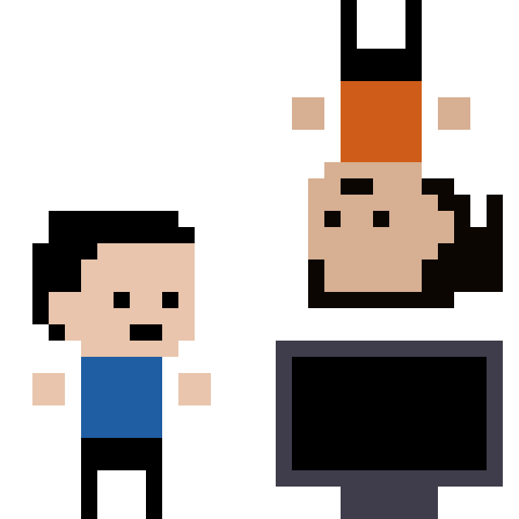

We are the official Faculty of Information Technology student society at Monash University. If you're not a member yet, come and join us!
We aim to provide a relaxed, social atmosphere where students can meet others who share their love for everything digital. Our community is one where we can share our opinions on the latest technology, and collaborate on projects and competitions.
We provide our members the opportunity to connect with some of Australia's leading technology companies through our many sponsored lunchtime events and networking opportunities - such as our Industry Night.
Past events that we have held include our Annual Trivia Night, Midnight-to-Dawn Laser Tag, and the hugely successful UNIHACK Melbourne hackathon competition. We also hold workshops to allow students to expand their knowledge such as data visualisation and cyber security.
If you have an MSA membership, click here
to log into the MSA portal and click "Buy Club Membership". You can also meet us at one of our events or BBQs and we'll sign you up on the spot!
Membership costs $2.00 with an MSA membership, otherwise $7.00.
Want to know the best Uni hacks? Uncover hidden conspiracies? And stay connected to the latest news around the Monash Campus? Plug in your headphones and stay WIRED_in!
Our club is a registered academic club with Monash Clubs and Societies.